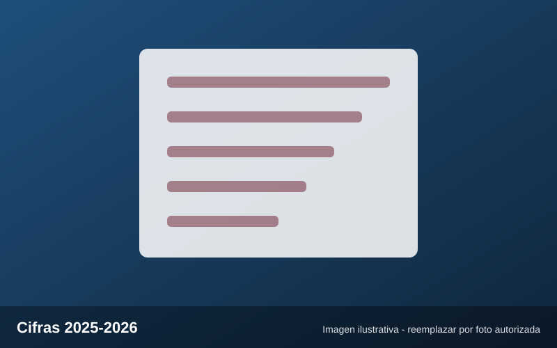

Institucional
El ITACE atendió a 21,203 personas e impartió 1,300 cursos en 2025-2026
En una reunión de seguimiento en Ciudad Victoria se informó que el instituto impartió 1,300 cursos en el ciclo 2025-2026, con unidades y acciones móviles en Altamira, Matamoros, Nuevo Laredo, Reynosa y Ciudad Victoria.
Fuente: POSTA